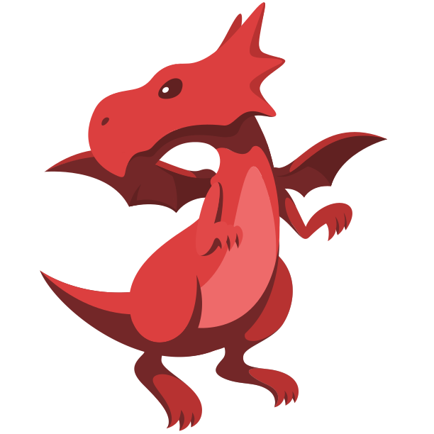

2017
Completed your 8th grade milestone! Your glipglop is now full grown!
Completed your 8th grade milestone! Your glipglop is now full grown!
Started 7th grade!
Completed three community activities! Your hatchling grew!
Went on a camping trip!
You graduated elementary school! Your egg hatched!
Started the fifth grade!